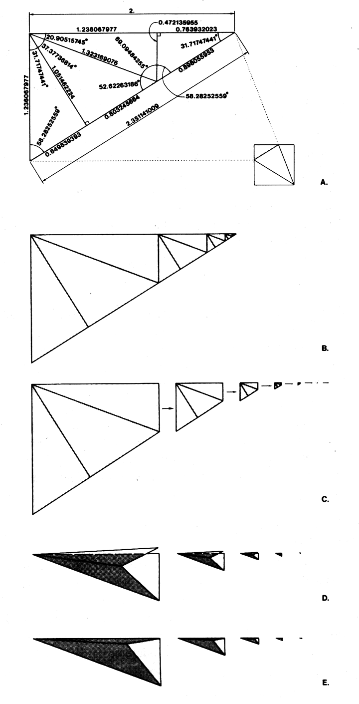

Fig. 986.561 T and E Modules: Minimod Nestabilities: Ratios of Angles and Edges: The top face remains open: the triangular lid will not close, but may be broken off and folded into smaller successive minimod tetra without limit.
Copyright © 1997 Estate of R. Buckminster Fuller